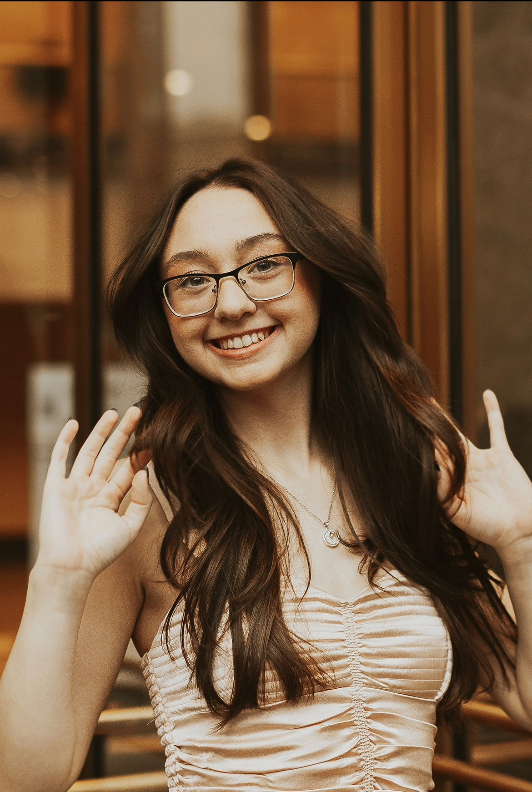
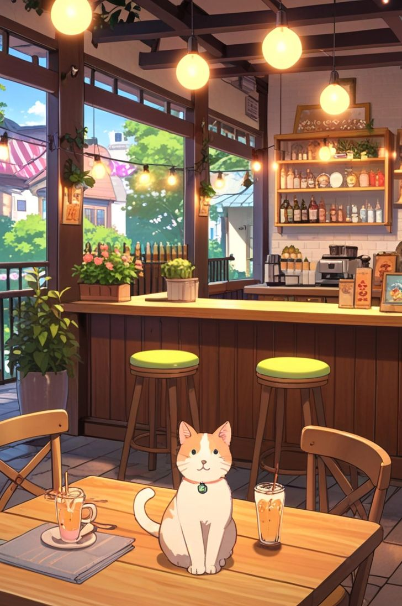

<!DOCTYPE html>
<html lang="en">
<head>
    <style>
        .container {
        max-width: 960px;
        margin: 0 auto;
        padding: 40px;
        }
        .project {
        margin-bottom: 20px;
        border: 1px solid #ccc;
        padding: 20px;
        }
    </style>
<meta charset="UTF-8">
<meta name="viewport" content="width=device-width, initial-scale=1.0">
<link rel="stylesheet" href="style.css">
<title>Document</title>
</head>
<body>
</body>
</html>
<body>
    <header>
        <nav>
            <ul>
            <li><a href="#about">About Me</a></li>
            <li><a href="#projects">Projects</a></li>
            <li><a href="#contact">Contact</a></li>
            </ul>
            </nav>
    </header>

    <section id="about">
        <div class="container">
            
            <h1>Leyla Kazazic</h1>
            <p style="font-family: 'Courier New', Courier, monospace; color: brown">Computer Science and Bioinformatics Student</p>
            <p>I am a passionate learner with a strong foundation in Python and Java, 
                currently expanding my skills in computer science and exploring exciting 
                areas like web design and the intersection of tech and biology. I’m 
                particularly interested in how programming, data analysis, and problem 
                solving can drive real world impact. I’m eager to keep learning, dive 
                into emerging technologies, and connect with others who are just as driven 
                to use tech to make a positive difference. </p>
            </div>
    </section>

    <section id="projects">
        <div class="container">
            <h2>Projects</h2>
            <div class="project">
            
            <h3>Project 1</h3>
            <p>The first project is a Python application with a designed graphical user interface (GUI) that takes user input on coffee
                preferences and matches them with a cat from the Animal Rescue League for adoption. In this project I also implemented the 
                Python Imaging Library (PIL) to display the matched cat’s photo and details, providing an engaging and informative user experience.</p>
            </div>
            Add more project divs here
            </div>
    </section>

    <section id="contact">
        <div class="container">
            <h2>Contact Me</h2>
            <p>You can reach me at leylak@iastate.edu</p>
            </div>

    </section>

    <footer>
        <p>&copy; 2025 Leyla Kazazic</p>
    </footer>
</body>